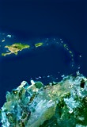

Welcome to Cuba
Timeworn but magnificent, dilapidated but dignified, fun yet maddeningly frustrating – Cuba is a country of indefinable magic.
READ MORE
Start exploring Cuba with Lonely Planet’s video guide to getting around, when to go and the top things to do while you're there.
Top experiences in Cuba
Habana Viega
HISTORIC HABANA VIEJAhavana
Eclectic ArchitectureVaradero
Idyllic Beach EscapesGran Parque Natural Montemar
Bird-WatchingTop sights in Cuba


Survival guide


Recent articles

Havana to Viñales: a classic Cuban road trip
The Malecon comes alive at sunset. This broad ribbon of cement curves around Havana’s waterfront, and as the sun wanes, the sky turns pink and the road is washed in coppery gold lig...

Discover Cuba by interest
Travel guides
Starting at £14.99
Ready to go? Get to the heart of Cuba with one of Lonely Planet's in-depth, award-winning guidebooks.